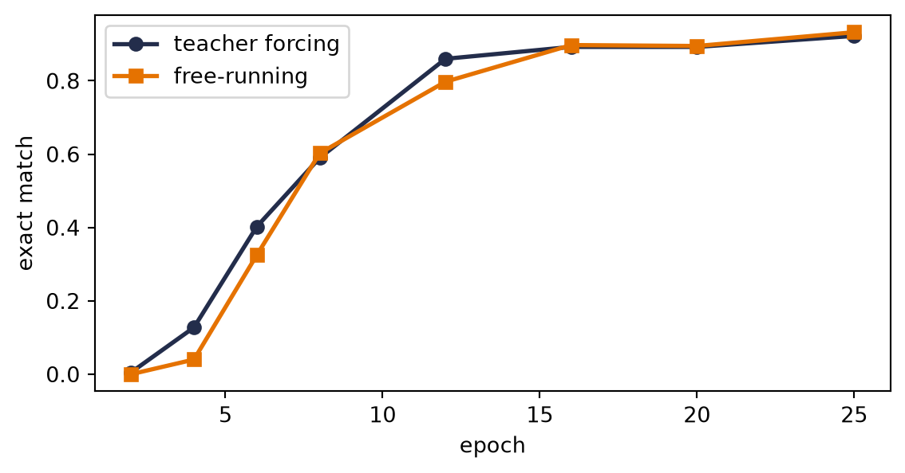

Chapter 10 ended with a promise: if one recurrent cell can read a sequence into a state, two cells can translate — one reads, one writes. This chapter builds that machine and the craft around it: how to train it fast (teacher forcing), what poisonous bookkeeping to avoid (padding), and how to get answers back out of it (greedy versus beam search). It ends where Part III must: staring at the one vector in the middle.
The lecture frames the stakes well. Every model so far has lived on a fixed-size contract — 784 pixels in, 10 logits out; \(28 \times 28\) garments in, one verdict out. The interesting world breaks that contract on both ends at once: translation maps a sentence of any length to a sentence of some other length, in a different vocabulary. The recurrent cell broke the contract on the input side; today we break it on both.
11.1 Two RNNs and a handoff
The architecture is one idea long. An encoder RNN reads the source sequence and keeps nothing but its final state — the entire input compressed into one vector, the context. A decoder RNN starts from that state and generates the output token by token, feeding each token back in, exactly like Chapter 10’s character model. A language model, in other words — but one with something to say.
Our laboratory task keeps every property of translation and none of the downloads: date normalization. The source language is human-written dates in several dialects; the target language is ISO 8601:
march 5, 2021 -> 2021-03-05
26 september 2024 -> 2024-09-26
12/15/1950 -> 1950-12-15
Variable-length input, different output alphabet, real long-range structure (the year arrives last in most sources but must be emitted first), and — by deliberate design, visible below — a dialect ambiguity that will give beam search something genuine to reveal: numeric dates are written mm/dd/yyyy by 70% of our imaginary writers (the US convention) and dd/mm/yyyy by 30%, and nothing in 03/05/2021 says which. Machine translation in miniature.
Code: the two date languages, generated on the fly
import random, torchimport torch.nn as nnimport torch.nn.functional as Fimport matplotlib.pyplot as pltMONTHS = ["january", "february", "march", "april", "may", "june", "july","august", "september", "october", "november", "december"]DAYS =dict(zip(MONTHS, [31, 28, 31, 30, 31, 30, 31, 31, 30, 31, 30, 31]))def make_date(rng): mo = rng.randrange(12) d = rng.randrange(1, DAYS[MONTHS[mo]] +1) y = rng.randrange(1950, 2026) iso =f"{y:04d}-{mo+1:02d}-{d:02d}" style = rng.random()if style <0.35: src =f"{MONTHS[mo]}{d}, {y}"elif style <0.6: src =f"{d}{MONTHS[mo]}{y}"elif rng.random() <0.7: src =f"{mo+1:02d}/{d:02d}/{y}"# US convention: mm/ddelse: src =f"{d:02d}/{mo+1:02d}/{y}"# EU convention: dd/mmreturn src, isorng = random.Random(6050)pairs = [make_date(rng) for _ inrange(9000)]train_pairs, test_pairs = pairs[:8000], pairs[8000:]print(*pairs[:4], sep="\n")PAD, BOS, EOS =0, 1, 2# special tokens firstSRC =sorted(set("".join(s for s, _ in pairs)))TGT =sorted(set("".join(t for _, t in pairs)))src_stoi = {c: i +3for i, c inenumerate(SRC)}tgt_stoi = {c: i +3for i, c inenumerate(TGT)}tgt_itos = {i: c for c, i in tgt_stoi.items()}V_src, V_tgt =len(SRC) +3, len(TGT) +3print(f"source vocab {V_src}, target vocab {V_tgt}")
('26 september 2024', '2024-09-26')
('april 7, 1962', '1962-04-07')
('12/15/1950', '1950-12-15')
('14 february 1997', '1997-02-14')
source vocab 37, target vocab 14
Three special tokens run the show, the same conventions as the course’s full translation pipeline: <pad> fills the short sequences of a batch out to a rectangle, <bos> tells the decoder “begin,” and <eos> lets the model say “I’m done” — remember, the machine must be free to choose its output length.
One more new tool, and it earns a pause. Chapter 10 fed characters in as one-hot vectors. This chapter gives each token a learned vector instead: nn.Embedding, a table with one trainable row per vocabulary entry. There is no new math — an embedding is exactly a one-hot vector times a weight matrix, Chapter 1’s linear map wearing a lookup table’s clothes — but the reading matters: the address is hard, the content is learned. Row 17 is fetched by index, rigidly; what lives in row 17 is whatever training decides that token should mean. Keep the phrase “hard address, learned content” nearby: in Chapter 13 we soften the address too, and that will be the whole story.
Code: encoder, decoder, and the handoff
class Seq2Seq(nn.Module):def__init__(self, v_src: int, v_tgt: int, embed: int=32, hidden: int=128, packed: bool=True):super().__init__()self.packed = packedself.src_emb = nn.Embedding(v_src, embed, padding_idx=PAD)self.tgt_emb = nn.Embedding(v_tgt, embed, padding_idx=PAD)self.encoder = nn.LSTM(embed, hidden, batch_first=True)self.decoder = nn.LSTM(embed, hidden, batch_first=True)self.out = nn.Linear(hidden, v_tgt)def encode(self, S, lengths): e =self.src_emb(S) # (B, T_src, embed)ifself.packed: # stop at each true length e = nn.utils.rnn.pack_padded_sequence( e, lengths, batch_first=True, enforce_sorted=False) _, state =self.encoder(e)return state # (h, c): the contextdef forward(self, S, lengths, T_in): # teacher-forced pass o, _ =self.decoder(self.tgt_emb(T_in), self.encode(S, lengths))returnself.out(o) # (B, T_tgt, V_tgt) logits
The whole architecture is that encode return value: the LSTM’s final \((\vect{h},
\vect{c})\), handed to the decoder as its initial state. Everything the decoder will ever know about the source crosses that bridge.
11.2 The padding trap
Before the machinery works, an honest detour through the way it fails, because the seed notes devote a full section to this and experience says everyone hits it once. Batching variable-length sequences means padding them to a rectangle, and padding poisons two places:
The loss. Positions holding <pad> are not predictions to be graded. F.cross_entropy(..., ignore_index=PAD) excludes them — one argument, done.
The encoder. Subtler and far worse: an LSTM does not know your zeros are padding. It keeps stepping through them, and every pad step smears the final state — the context vector! — for every sequence shorter than the batch’s longest. Worse still, at inference you feed single sequences with no padding, so the model is tested in a regime it never trained in.
Watch what that costs. Same model, same data, same budget — the only difference is whether the encoder is told the true lengths (pack_padded_sequence, which runs the recurrence only through each sequence’s real tokens):
Code: train twice — naive right-padding vs. packed sequences
def batchify(prs, idx): srcs = [torch.tensor([src_stoi[c] for c in prs[i][0]]) for i in idx] lengths = torch.tensor([len(s) for s in srcs]) tgts = [torch.tensor([BOS] + [tgt_stoi[c] for c in prs[i][1]] + [EOS])for i in idx] S = nn.utils.rnn.pad_sequence(srcs, batch_first=True, padding_value=PAD) T = nn.utils.rnn.pad_sequence(tgts, batch_first=True, padding_value=PAD)return S, lengths, Tdef train_seq2seq(mode: str="tf", packed: bool=True, epochs: int=25, seed: int=6050, batch: int=128, checkpoints=()): torch.manual_seed(seed) model = Seq2Seq(V_src, V_tgt, packed=packed) opt = torch.optim.Adam(model.parameters(), lr=1e-3) n, curve =len(train_pairs), {}for ep inrange(1, epochs +1): perm = torch.randperm(n)for i inrange(0, n, batch): S, L, T = batchify(train_pairs, perm[i:i + batch].tolist())if mode =="tf": # gold rail: one parallel pass logits = model(S, L, T[:, :-1])else: # free-running: its own rail state = model.encode(S, L) tok, outs = T[:, :1], []for t inrange(T.shape[1] -1): o, state = model.decoder(model.tgt_emb(tok), state) logit = model.out(o) outs.append(logit) tok = logit.argmax(-1) # feed its own prediction logits = torch.cat(outs, 1) loss = F.cross_entropy(logits.reshape(-1, V_tgt), T[:, 1:].reshape(-1), ignore_index=PAD) opt.zero_grad(); loss.backward() nn.utils.clip_grad_norm_(model.parameters(), 5.0) opt.step()if ep in checkpoints: curve[ep] = exact_match(model, test_pairs[:400])return model, curve@torch.no_grad()def translate(model, src: str, maxlen: int=12): S = torch.tensor([[src_stoi[c] for c in src]]) state = model.encode(S, torch.tensor([len(src)])) tok, out = torch.tensor([[BOS]]), ""for _ inrange(maxlen): o, state = model.decoder(model.tgt_emb(tok), state) tok = model.out(o).argmax(-1) # greedy: best next charif tok.item() == EOS:break out += tgt_itos.get(tok.item(), "?")return out@torch.no_grad()def exact_match(model, prs):returnsum(translate(model, s) == t for s, t in prs) /len(prs)# the unambiguous test set: one defensible answer existsunamb = [(s, t) for s, t in test_pairsif"/"notin s orint(s[:2]) >12orint(s[3:5]) >12]naive, _ = train_seq2seq(packed=False)packed, _ = train_seq2seq(packed=True)print(f"naive right-padding: exact match {exact_match(naive, unamb):.1%}")print(f"packed (true lengths): exact match {exact_match(packed, unamb):.1%}")
naive right-padding: exact match 39.8%
packed (true lengths): exact match 98.5%
Fifty-nine points. Not from a better architecture, optimizer, or dataset — from telling the encoder where the sentences actually end. Let the number sink in, because this is the cheapest lesson in the book: the two runs are identical except for bookkeeping, and the bookkeeping was worth more than every design decision in Part III so far.
WarningThe model will happily read your padding
Nothing in the tensor marks <pad> as meaningless; meaning is something you enforce, in two places: ignore_index for the loss, pack_padded_sequence (or an explicit mask) for the encoder. When a sequence model underperforms mysteriously, audit the padding before touching the architecture. And file the general shape of this tool away: telling a model which positions it may not look at is called masking, and it returns center-stage in Chapter 14, where a causal mask is what turns a transformer into a language model.
11.3 Teacher forcing: training on the gold rail
Look back at the two mode branches in the training loop; they are this section. When the decoder is trained, what should it see as its own previous output?
Free-running (“fr”) is the honest answer: feed the model’s own predictions back in, exactly as at inference. But its flaws are structural. Early in training those predictions are garbage \(\rightarrow\) the decoder learns conditioned on garbage \(\rightarrow\) every sequence must be generated token-by-token in a Python loop, because step \(t\)’s input does not exist until step \(t-1\) is computed. Slow, and unstable exactly when training is young.
Teacher forcing (“tf”) conditions each step on the ground-truth previous token instead — the gold rail. Every conditioning input is then known in advance \(\rightarrow\) the entire target trains in one parallel decoder pass (that is the whole model(S, L, T[:, :-1]) line), and every step learns from a sensible context from epoch one. Watch both effects:
Code: teacher forcing vs. free-running, learning curves
cps = (2, 4, 6, 8, 12, 16, 20, 25)tf_model, tf_curve = train_seq2seq("tf", checkpoints=cps)fr_model, fr_curve = train_seq2seq("fr", checkpoints=cps)print(f"final exact match (unambiguous): TF {exact_match(tf_model, unamb):.1%}, "f"FR {exact_match(fr_model, unamb):.1%}")plt.figure(figsize=(6, 3.2))plt.plot(cps, [tf_curve[c] for c in cps], "o-", color="#232D4B", lw=2, label="teacher forcing")plt.plot(cps, [fr_curve[c] for c in cps], "s-", color="#E57200", lw=2, label="free-running")plt.xlabel("epoch"); plt.ylabel("exact match")plt.legend(); plt.tight_layout(); plt.show()
final exact match (unambiguous): TF 98.5%, FR 99.4%

Figure 11.1: Learning curves under the two training modes (exact-match on 400 held-out dates). Teacher forcing leads through the early and middle epochs (40% vs. 33% at epoch 6, 86% vs. 80% at 12) — and each of its epochs is one parallel decoder pass where free-running needs a token-by-token loop. The honest fine print: on this small task free-running closes the gap by epoch 16 and ends fractionally ahead, because it never suffers the train/inference mismatch described below.
So teacher forcing is the pragmatic default: parallel, stable, fast out of the gate. What it costs has a name. A teacher-forced decoder has only ever seen perfect histories. At inference it must condition on its own imperfect predictions — a distribution it never trained on. This mismatch is exposure bias: the model never learned to recover from its own mistakes, so one early slip can send the rest of the sequence somewhere strange. You can see the shape of this failure in our model’s rare residual errors:
Code: the residual errors, up close
errs = [(s, t, translate(tf_model, s))for s, t in unamb if translate(tf_model, s) != t]print(f"{len(errs)} errors on {len(unamb)} unambiguous dates; a sample:")for s, t, g in errs[:3]:print(f" {s!r} -> {g!r} (truth {t})")
Look at that third specimen: February 31st. Each character locally plausible given the last, the whole confidently impossible. Off the gold rail, the decoder does not consult the source so much as invent — hold that thought two sections.
NoteScheduled sampling: renting the rail
The engineered compromise (Bengio et al., 2015): during training, at each timestep flip a biased coin — probability \(\epsilon\) of the gold token, \(1 -
\epsilon\) of the model’s own prediction — and anneal \(\epsilon\) from 1 toward 0 as training matures. Early epochs enjoy the gold rail; late epochs practice recovery. One design detail from the original paper worth repeating: flip per token, not per sequence — committing a whole sequence to model predictions early in training lets consecutive errors amplify. Exercise 3 has you build it.
11.4 Getting answers out: search
Training is settled; now the neglected half. At inference the decoder defines a probability for every possible output sequence, and we want the best one. That is a search problem over a tree where every node branches \(V_{\text{tgt}}\) ways — exhaustive search is \(V^{T}\), hopeless. Everything practical is a heuristic walk through that tree.
Greedy search — what translate above already does — takes the single most probable token at each step and never looks back. Complexity \(O(V \cdot T)\), quality: usually fine, occasionally myopic. The failure mode is structural: a token that looks best right now can commit the decoder to a mediocre continuation, when a slightly worse token now would have opened a much better path. Maximizing each step is not maximizing the sequence — you met this exact gap in Chapter 2, where the hard max’s stepwise confidence hid the alternatives softmax kept alive.
Beam search widens the walk: carry the \(k\) best partial sequences (the beam), expand each by all \(V\) tokens, keep the top \(k\) by cumulative log-probability, repeat. Complexity \(O(k \cdot V \cdot T)\) — a small multiple of greedy, nothing like exhaustive.
Code: beam search, k candidate rails at once
@torch.no_grad()def beam_search(model, src: str, k: int=5, maxlen: int=12): S = torch.tensor([[src_stoi[c] for c in src]]) state = model.encode(S, torch.tensor([len(src)])) beams = [([], 0.0, state, False)] # (tokens, logp, state, done)for _ inrange(maxlen): cand = []for seq, lp, st, done in beams:if done: cand.append((seq, lp, st, True));continue tok = torch.tensor([[seq[-1] if seq else BOS]]) o, st2 = model.decoder(model.tgt_emb(tok), st) logp = F.log_softmax(model.out(o)[0, -1], -1) top = torch.topk(logp, k)for lg, ix inzip(top.values, top.indices): cand.append((seq + [ix.item()], lp + lg.item(), st2, ix.item() == EOS)) beams =sorted(cand, key=lambda b: -b[1])[:k]ifall(b[3] for b in beams):breakreturn [("".join(tgt_itos.get(i, "?") for i in seq if i >2), lp)for seq, lp, _, _ in beams]
Now the payoff, and it is exactly where we buried it: the ambiguous dates. For 03/05/2021, “the one best answer” is the wrong question — the training world itself was split 70/30 between two readings. Greedy silently hands you one sequence. Beam search hands you the distribution:
Code: beam search on genuinely ambiguous dates
amb = [(s, t) for s, t in test_pairsif"/"in s andint(s[:2]) <=12andint(s[3:5]) <=12]for s, t in amb[:4]:print(f"{s!r} greedy: {translate(tf_model, s)!r}")for text, lp in beam_search(tf_model, s, k=4)[:2]:print(f" beam: {text!r} p = {torch.tensor(lp).exp():.2f}")print()
'10/09/1976' greedy: '1976-10-09'
beam: '1976-10-09' p = 0.62
beam: '1976-09-10' p = 0.33
'07/07/2022' greedy: '2022-07-07'
beam: '2022-07-07' p = 0.96
beam: '2022-07-05' p = 0.01
'01/07/1978' greedy: '1978-01-07'
beam: '1978-01-07' p = 0.71
beam: '1978-07-01' p = 0.23
'09/01/1965' greedy: '1965-09-10'
beam: '1965-01-09' p = 0.45
beam: '1965-09-10' p = 0.41
Read those pairs of hypotheses. The two beam candidates are the two readings — month/day and day/month — and their probabilities sit near the 70/30 convention split the data was generated with: the model has learned not just to translate but to represent its own uncertainty, and beam search is the tool that lets you see it. When the two readings coincide, as in 07/07/2022, the top candidate absorbs nearly all the mass — the ambiguity was never real for that date, and the beam says so. Best of all, watch for a greedy line that fumbles one of these: starting down one reading, switching midway, emitting a date that is neither, while the beam’s top candidate stays coherent. Myopia, caught in the wild.
Honesty requires the other half of the report:
Code: how often beam actually changes the answer
sub = random.Random(0).sample(test_pairs, 200)n_diff =sum(beam_search(tf_model, s, k=5)[0][0] != translate(tf_model, s)for s, _ in sub)print(f"beam-5 disagrees with greedy on {n_diff} of {len(sub)} test dates")
beam-5 disagrees with greedy on 1 of 200 test dates
On this small, well-trained model, beam search changes almost nothing. Beam search earns its keep at the margins — but real translation, with vocabularies of tens of thousands and long sentences, lives entirely at those margins, which is why every production decoder of the seq2seq era ran a beam.
NoteLength normalization
Summed log-probabilities shrink as sequences grow \(\rightarrow\) a raw beam quietly favors short outputs. The standard correction divides the score by \(L^{\alpha}\) with \(\alpha \approx 0.6\)–\(0.75\). Our dates all have the same length, so the bias is invisible here (Exercise 4 makes you verify that, and why); in free-length generation it matters enormously.
CautionGPU run pending
Planned: the real thing — English→French seq2seq on a full parallel corpus, with the course’s train_seq2seq.py pipeline (two-layer LSTMs, dropout, sequence bucketing for throughput, BLEU evaluation), comparing greedy vs. beam widths. Meanwhile: the date laboratory above demonstrates every mechanism at CPU scale.
11.5 The vector in the middle
Time to stare at the handoff. Every property of the source that the decoder will ever use crossed one bridge: a 128-number state. Our task fits — a date is three facts — and still the fingerprints of strain show. The residual errors are order-slips and inventions (1956-02-31), the signature of a decoder reconstructing from a compressed summary rather than consulting the source. Now scale the ambition: a forty-word sentence, clause structure, names, negations — all crammed through the same fixed pipe, regardless of length. Chapter 10 called this the price of the Markov claim; here the bill arrives itemized.
And notice what the architecture throws away: the encoder had a state at every step — a whole trajectory of summaries, one per source position — and we kept only the last. The fix that defines Part IV is almost embarrassingly direct: keep them all, and let the decoder look back at whichever ones matter for the token it is writing right now. Choosing where to look, by similarity, on the fly — you have owned the primitive since Chapter 1’s dot product, and Chapter 2 promised you the “soft lookup” that makes it differentiable. Chapter 12 builds the classical version; Chapter 13 makes it learnable and comes back for this very date task with an alignment map to show where the decoder looks.
11.6 Okay, so —
Encoder–decoder = two RNNs and a handoff: read the source into a final state, hand it over, generate from it. <bos> starts the decoder, <eos> lets it choose its length, embeddings replace one-hots (hard address, learned content).
Padding poisons twice: the loss (ignore_index) and the encoder (pack_padded_sequence). Same model, same budget: 39.8% naive versus 98.5% packed. Audit bookkeeping before architecture.
Teacher forcing trains the decoder on the gold rail: one parallel pass, stable early learning — at the cost of exposure bias, the train/inference mismatch that free-running avoids by paying with speed and early instability. Scheduled sampling anneals between them, flipping per token.
Decoding is search. Greedy maximizes steps, not sequences; beam search carries \(k\) rails for \(O(k V T)\) and surfaces the model’s genuine uncertainty — our ambiguous dates come back as two readings at roughly the 70/30 training split. Length normalization (\(L^{\alpha}\)) keeps long outputs competitive.
The bottleneck is now the story. One fixed vector between reader and writer, regardless of input length; errors that look like invention, not lookup. The encoder’s per-step states were there all along — Part IV is what happens when we stop throwing them away.
Exercises
(Pencil.) Count this chapter’s parameters: two embeddings, two LSTMs, one output layer (\(V_{\text{src}} = 37\), \(V_{\text{tgt}} = 14\), embed 32, hidden 128; an LSTM holds \(4\left[(e + h)h + 2h\right]\) — derive that first). Where do most parameters live, and why is the answer different from Chapter 8’s LeNet audit?
(Pencil.) With vocabulary \(10^4\) and output length 10, compare the number of sequences examined by exhaustive search, greedy, and beam-5. Then explain why beam search with \(k = V^{T}\) is exact and with \(k = 1\) is greedy — and why neither endpoint is usable.
(Code.) Implement scheduled sampling: per token, use the gold input with probability \(\epsilon\), the model’s own prediction otherwise, annealing \(\epsilon\) linearly \(1 \to 0\) over 25 epochs. Compare its learning curve with both curves in Figure 11.1. Does it inherit teacher forcing’s fast start and free-running’s finish?
(Code.) Add length normalization (\(/L^{\alpha}\)) to beam_search and sweep \(\alpha \in \{0, 0.7, 1\}\) on the date task. Nothing should change — explain precisely why, and design the smallest change to the task that would make \(\alpha\) matter.
(Code.) Sutskever et al. (2014) famously improved translation by feeding the source sentence reversed. Try it here. Whatever you observe, explain it with this chapter’s tools: which source-target dependencies does reversal shorten in their setting, and which does it shorten — or lengthen — for dates, where the year sits at the end of the source but the start of the target?